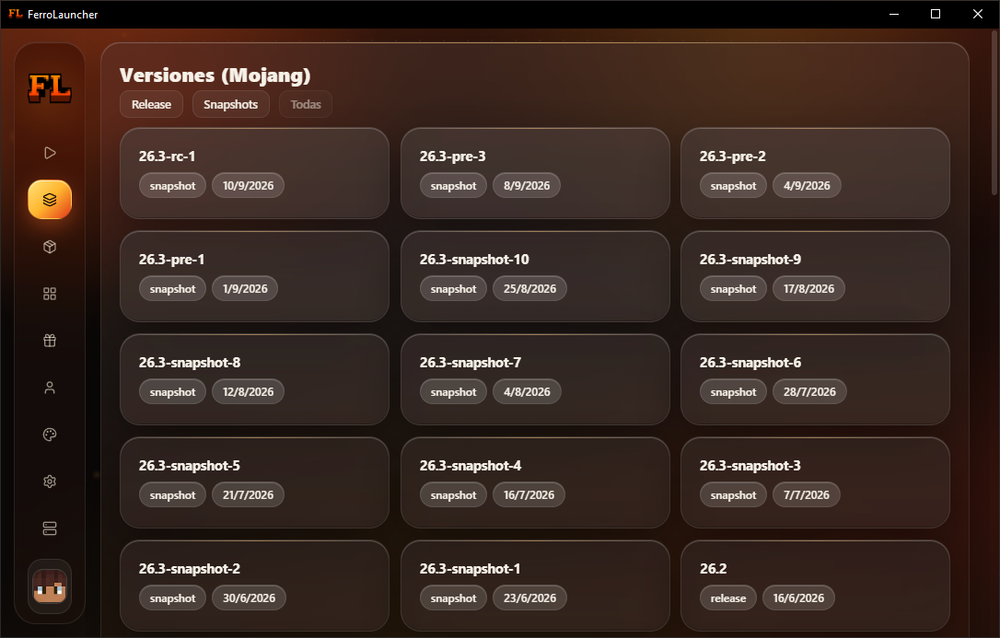
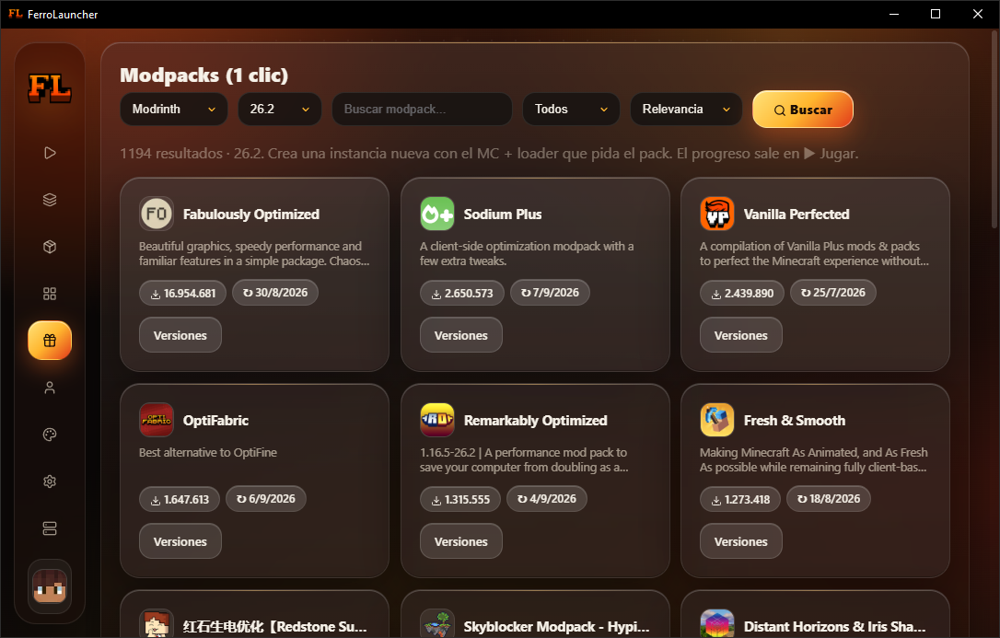
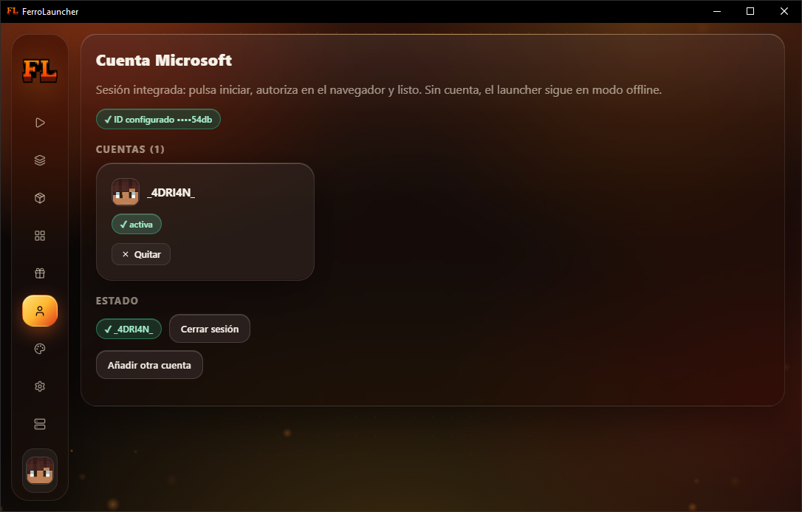
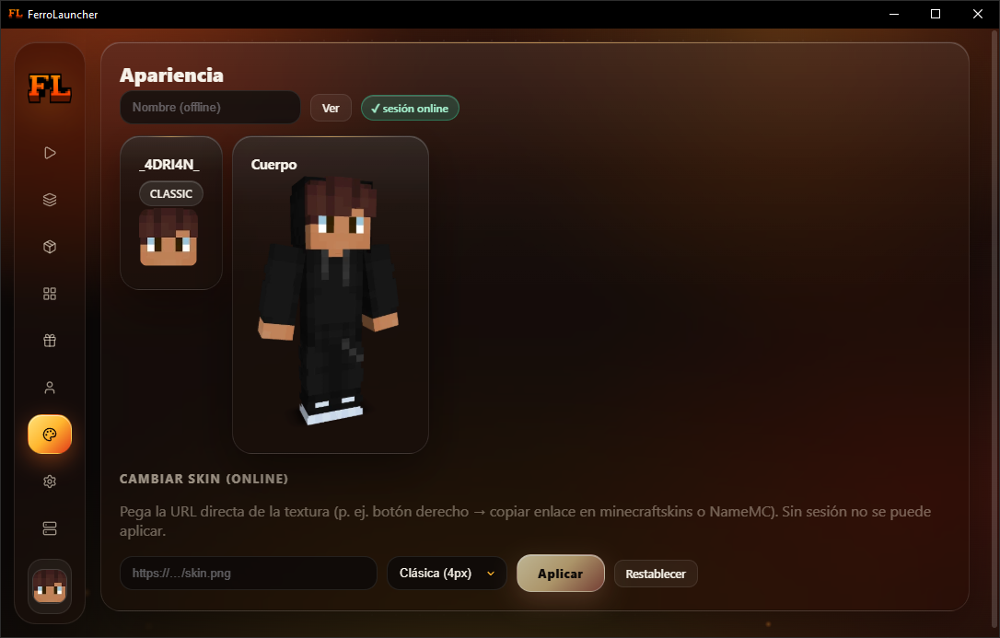
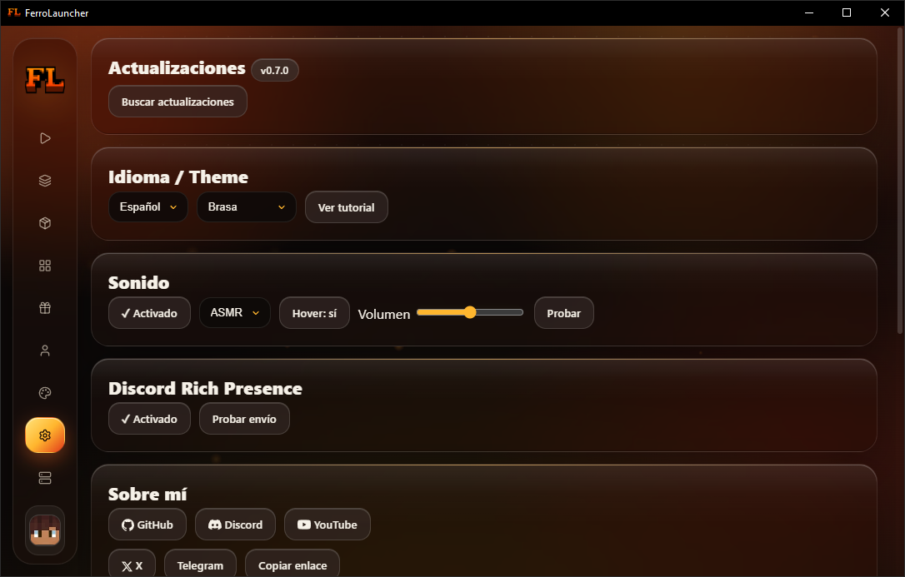
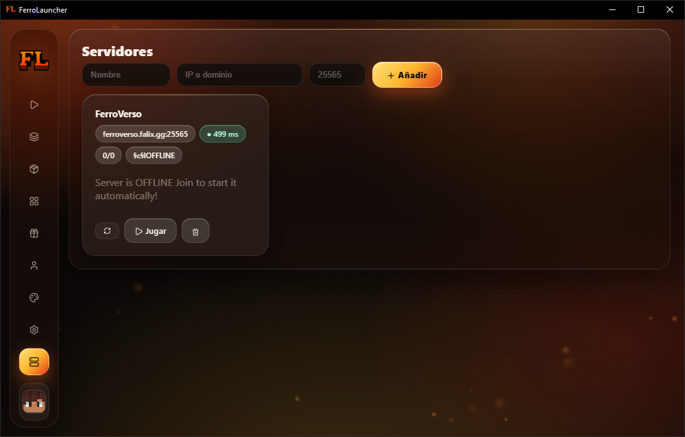

FerroLauncher
FerroLauncher
Launcher gratis y open-source de Minecraft: Java Edition para Windows. Cinco loaders, mods en 1 clic y multicuenta Microsoft.
v0.7.0 · Windows 10/11 64-bit
 v0.7.0
v0.7.0
Todo tu ecosistema Minecraft
Potencia seria sin complicaciones, y ni un solo anuncio.
Vanilla, Fabric, Quilt, Forge y NeoForge con instaladores oficiales, snapshots y Java automático.
Sin anuncios, sin rastreadores, sin telemetría. Código abierto de verdad.
Mods, shaders, resource packs y modpacks desde Modrinth y CurseForge.
Offline, multicuenta Microsoft, skins, capas y anti-suplantación.
Backups por instancia, exportar/importar y copia total del perfil.
Servidores con ping, doctor de crashes, JVM a medida y Discord RPC.
Intro cinematográfica, sidebar auto-colapsable, resortes y sonidos sintetizados.
Cuatro temas, ES/EN automático y packs de sonido.
Una captura por categoría. Pulsa para ampliar.
JugarEntra en 1 clic con consola y progreso en vivo.

VersionesTodo Mojang: releases, snapshots y detalles. InstanciasCrea, duplica, exporta y diagnostica.
InstanciasCrea, duplica, exporta y diagnostica.
 ContenidoMods, shaders y packs de Modrinth y CurseForge.
ContenidoMods, shaders y packs de Modrinth y CurseForge.

ModpacksModpacks enteros instalados en 1 clic.
CuentaMulticuenta Microsoft con sesión integrada.
SkinMira y cambia tu skin y tu capa.
AjustesJava, RAM, JVM, sonido, temas, Discord y updates.
ServidoresFavoritos con ping real y juego directo.Reporta bugs, pide funciones o echa un cable. Todo pasa por GitHub y Discord.
Temas abiertos: …
…
Núcleo completo: loaders, mods, cuentas premium, backups, updater y UI con vida.
v0.7 pulida y probada con la comunidad. La 1.0 oficial está al caer.
Salida oficial: instalador firmado, modo offline total y más loaders.
Gratis y open-source (MIT). Elige instalador o portable, ambos de la última release de GitHub.
Windows 10/11 64-bit · ~200 MB · Java incluido automáticamente
Sí, porque el instalador no está firmado (cuesta dinero). Es seguro: el código es público. Pulsa Más información → Ejecutar de todas formas.
No para jugar offline. Con cuenta (que tenga Minecraft Java) entras a servidores online con tu nombre real.
No. El launcher detecta el Java que pide cada versión y descarga Temurin solo si falta.
No. Proyecto personal no comercial, sin afiliación. Los archivos del juego se descargan siempre de servidores oficiales.
Gratis, open-source, sin letra pequeña. Descarga FerroLauncher y juega hoy mismo.
{kind=link}
{kind=link}
{kind=link}
{kind=link}
{kind=link}
{kind=link}